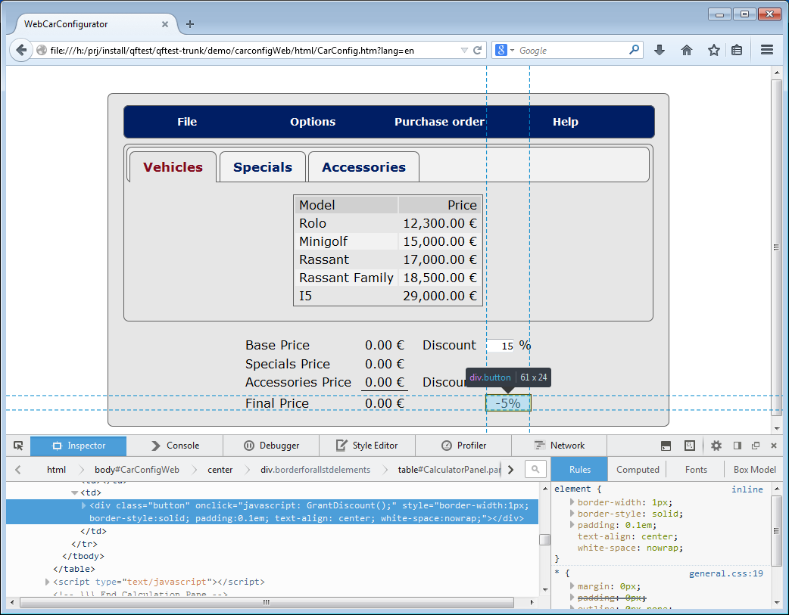

| Version 6.0.3 |
Due to the flexibility of HTML your first step should be to get a good understanding of how the framework used creates its components and of the specific attributes and properties of the HTML components generated. For example, you need to find out if a button in the GUI always has the same criteria for QF-Test to recognize it.
QF-Test saves the relevant information of the HTML object like for example the
class attribute as an 'Extra feature' of the 'Component' node.
You can use the information recorded by QF-Test to obtain the necessary criteria
for identifying the GUI objects.
|
|  |
||
|
| Figure 47.2: Recording of '-5%' button in WebCarConfigurator | ||
Inspecting the HTML code of a web page can be achieved by using the built-in development tools of your browser or extensions like FireBug.
|
|  | ||
|
| Figure 47.3: HTML code inspection in Firefox | ||
| Last update: 9/6/2022 Copyright © 1999-2022 Quality First Software GmbH |